For researchers
Use standardized forms inside XR studies while keeping study timing, condition order, and participant session logic in the experiment app.
Quest Questionnaire Panel
A Unity, native Android, or OpenXR-style study app launches this Quest-compatible native Android panel with a JSON request. The participant answers in a Quest-friendly 2D UI, the panel writes a structured JSON result to the caller-owned URI, and the caller validates the result before resuming.
XR studies often need questionnaires before, between, or after immersive conditions. Building those forms directly into every Unity scene is slow, fragile, and hard to standardize. This panel keeps the questionnaire moment separate: the XR app launches it, the participant answers in a Quest-friendly 2D UI, and the XR app resumes with structured data.
The repository includes two reference integration lanes. The Unity/BRB lane drives the Big Red Button questionnaire sequence. The Windows Makepad/Rusty Morphospace lane drives the MAIA/spatial questionnaire sequence. They are different examples of the same panel runtime shape: a caller launches a panel stage and receives a validated result through the Android request/result contract.
This is the whole product shape: one foreground caller, one native panel moment, and one validated result before the caller resumes.
The project is for studies that need reliable form capture without rebuilding questionnaires inside every immersive scene.
Use standardized forms inside XR studies while keeping study timing, condition order, and participant session logic in the experiment app.
Launch the panel through a small Android bridge, pass the study stage as request JSON, and read a validated result summary when the panel closes.
Use the Intent contract directly: request JSON in, result JSON
out through a caller-owned content:// URI.
Owns the session, trigger timing, request id, result URI, and recovery state.
Owns 2D UI, narration, validation, answers, and result writing.
Validates request id, nonce, schema, status, stage, and answer shape before continuing.
The panel is not a Unity overlay, not a Windows overlay, and not the owner of the study world. It is a separate Quest-compatible Android panel launched only for the questionnaire moment.
The Big Red Button example is a Unity XR study app that launches the panel for BRB-specific stages such as demographics, post-condition presence, and final confirmation.
The Windows operator example sends commands to a Quest-side Rusty Morphospace bridge. That bridge launches the panel for the MAIA-2 plus spatial-frame-reference questionnaire sequence.
These examples use different questionnaire content and different control surfaces, but the underlying panel code, stage request model, result URI, and callback pattern are intentionally shared.
| Reference lane | Questionnaire content | Caller / control layer | What it proves |
|---|---|---|---|
| Native Android caller | Generic contract fixtures | Direct Android Intent | Minimal request/result contract. |
| Unity / BRB | Big Red Button questionnaire sequence | Unity C# to Android Java bridge | XR study app launches and resumes around panel moments. |
| Windows Makepad / Rusty Morphospace | MAIA-2 plus spatial-frame-reference sequence | Makepad host app plus Quest-side HTTP bridge | Experimenter/operator commands can trigger panel blocks without Unity owning the trigger. |
| Generic Unity package | Caller-provided stage sequence | Unity C# facade plus Android SDK bridge | Reusable caller path without Unity-side IPC duplication. |
| Other OpenXR / native apps | Caller-provided stage sequence | Explicit Android Intent | Engine-agnostic launch and return path. |
The same contract supports different readers. Start with the path that matches what you need to evaluate or build.
Start with the handoff, privacy model, recovery statuses, timing metadata, and visual demos.
Start with the Unity wrapper, BRB reference, stage mapping, and result validation path.
Start with the Android caller SDK, explicit Intent contract, and request/result JSON fixtures.
Start with the Makepad app, Rusty Morphospace bridge, MAIA questionnaire blocks, foreground status, and CLI equivalents.
Start with the implementation map, validation matrix, workplan, public artifact guard, and contribution guide.
The Makepad operator is one possible host-side control surface for this panel architecture. In the current reference it controls the MAIA/spatial questionnaire through a Rusty Morphospace bridge, while the Unity/BRB example controls a BRB questionnaire through a Unity-owned Android bridge.
The operator installs or refreshes the panel APK, checks the Quest, forwards the bridge port, and sends block commands. The Quest-side bridge still owns the actual Android launch request and caller-owned result URI.
Devices to fill the Quest serial.Install Panel to run an ADB reinstall.
Use Forward when the Quest bridge listens on the
default device port and the operator should reach it through
http://127.0.0.1:8787. Then use
Poll and Open Block 1/2/3.
In production the bridge should live in the active XR caller that owns the session and result URI, so panel completion returns to the same app session.
| Step | GUI control | CLI equivalent | Meaning |
|---|---|---|---|
| Build panel | Outside the operator | .\gradlew.bat :app:assembleMinimalDebug |
Creates the public minimal questionnaire APK. |
| Install panel | Panel APK plus Install Panel |
install-panel --serial SERIAL --apk app\build\outputs\apk\minimal\debug\app-minimal-debug.apk |
Runs adb install -r -d for setup or update. |
| Check Quest | Tools, Devices, Status |
tooling-status, devices, device-status --serial SERIAL |
Confirms ADB, the selected Quest, battery, controllers, and foreground hints. |
| Reach bridge | Forward |
bridge-forward --serial SERIAL --host-port 8787 --device-port 8787 |
Forwards the Quest-side bridge to a local operator endpoint. |
| Open questionnaire | Open Block 1/2/3 |
open-block --block 2 --session-id SESSION --participant-ref REF --endpoint http://127.0.0.1:8787 |
Sends a bridge command; the Quest caller launches the panel through the Android contract. |
.\gradlew.bat :app:assembleMinimalDebug
cargo run --manifest-path operator\makepad-quest-questionnaire-operator\Cargo.toml --bin quest-questionnaire-operator-cli -- install-panel --serial SERIAL --apk app\build\outputs\apk\minimal\debug\app-minimal-debug.apk --json
cargo run --manifest-path operator\makepad-quest-questionnaire-operator\Cargo.toml --bin quest-questionnaire-operator-cli -- bridge-forward --serial SERIAL --host-port 8787 --device-port 8787
cargo run --manifest-path operator\makepad-quest-questionnaire-operator\Cargo.toml --bin quest-questionnaire-operator-cli -- status --endpoint http://127.0.0.1:8787
cargo run --manifest-path operator\makepad-quest-questionnaire-operator\Cargo.toml --bin quest-questionnaire-operator-cli -- open-block --block 2 --session-id maia-spatial-session-001 --participant-ref P001 --language-code en --endpoint http://127.0.0.1:8787
ADB installation and port forwarding are lab setup tools. The
questionnaire handoff remains the caller-owned
content:// result URI plus callback contract.
Unity owns the 3D scene, the panel owns the questionnaire moment, and the caller resumes only after reading and validating the result JSON. The renderings below are generated host-side layout references at the verified Quest panel frame, not headset screenshots.
The BRB app can run a timed blink on the 3D button cap. This stays on the Unity side because it belongs to the study scene.
A runtime command plays the press animation and increments the world-space counter. The panel does not replace this interaction.
The caller brings the native 2D panel forward, one answer action is submitted, and the panel finishes without taking ownership of the Unity scene.
These frames use the Quest 3S panel surface verified on device: 1350 x 900 pixels at 200dpi.
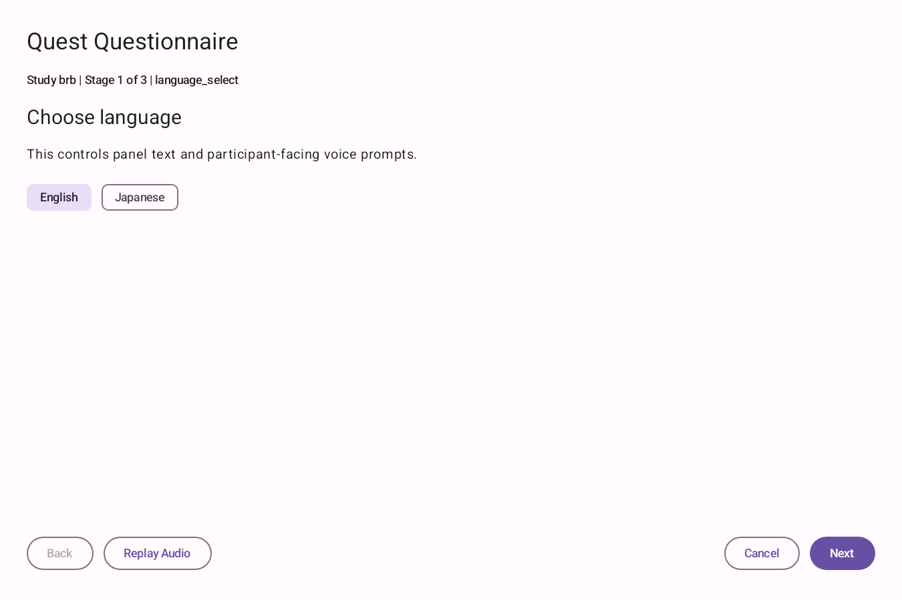
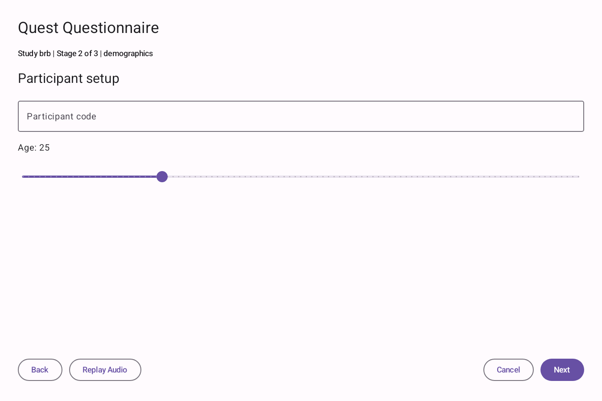
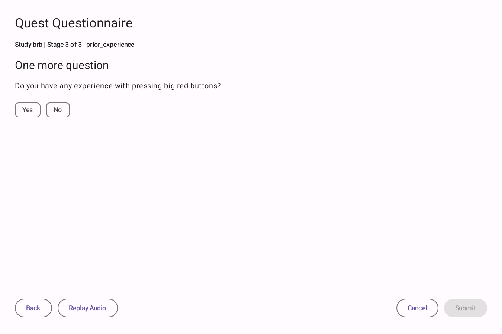
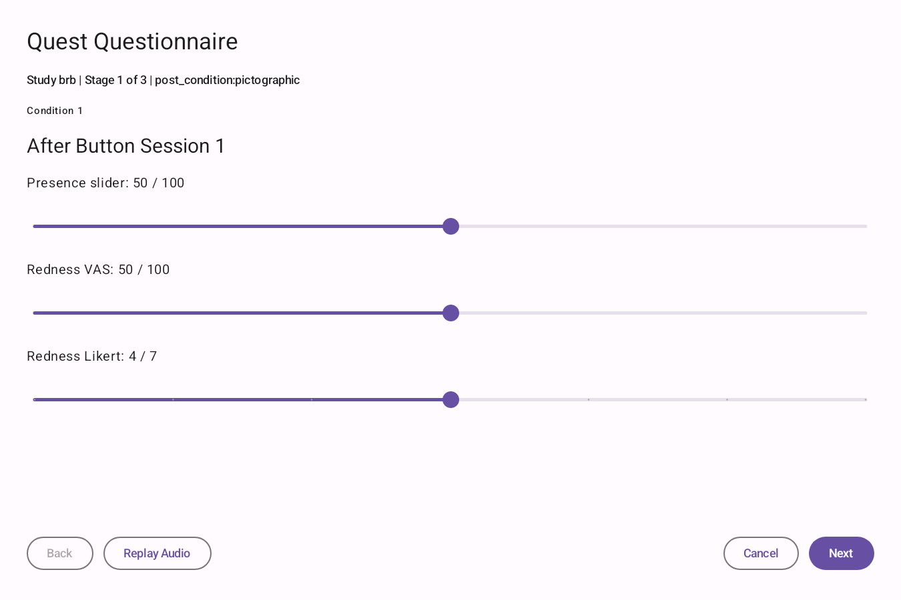
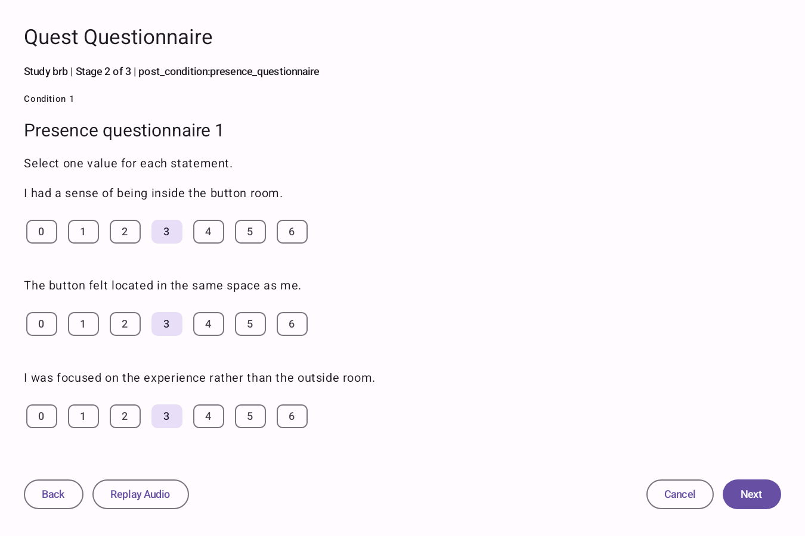
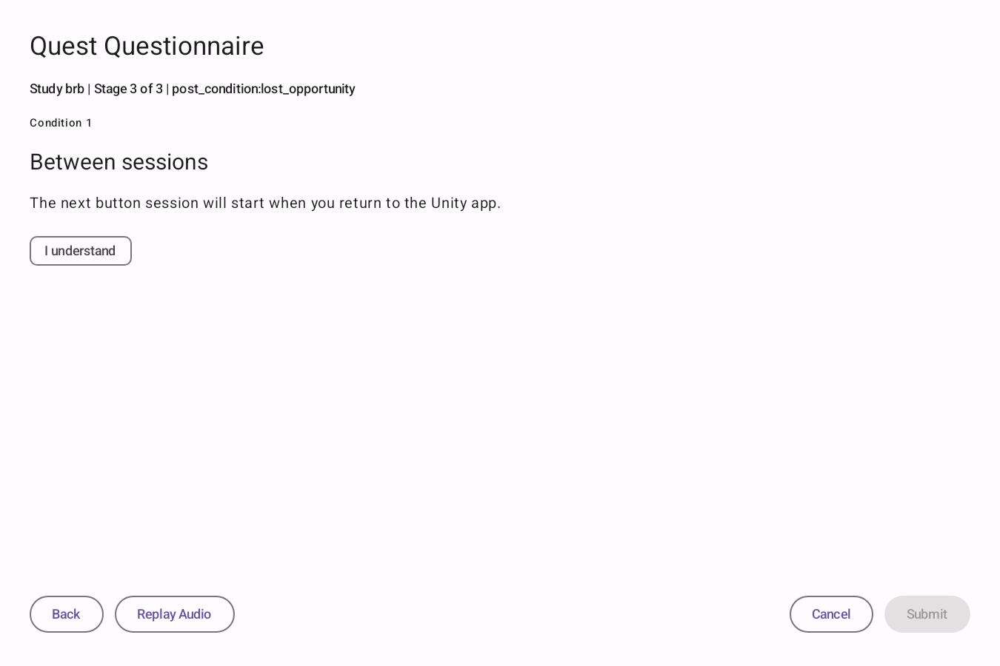
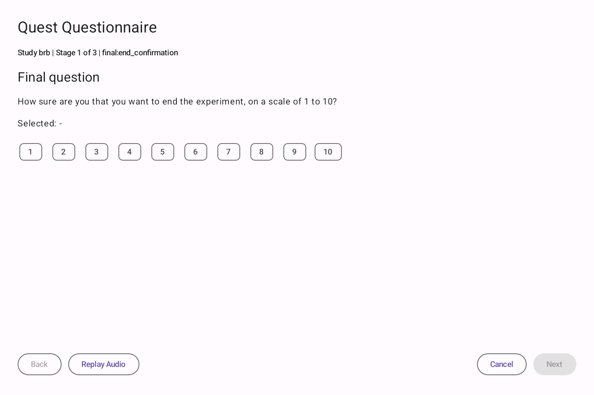
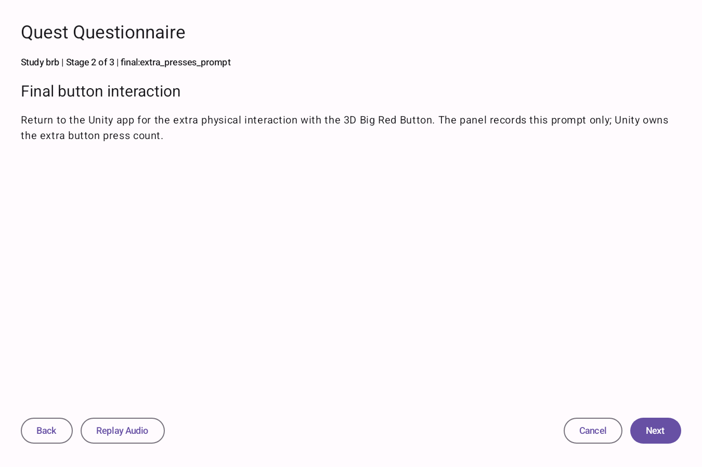
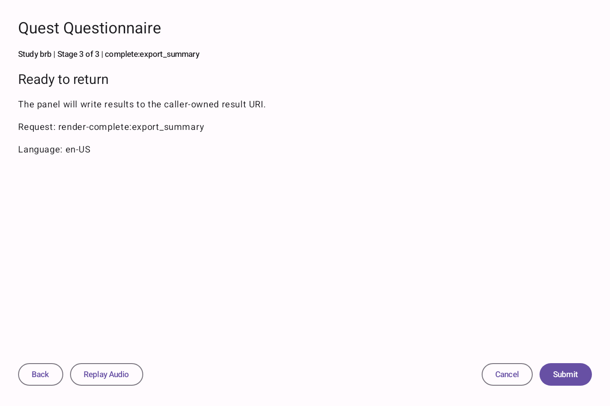
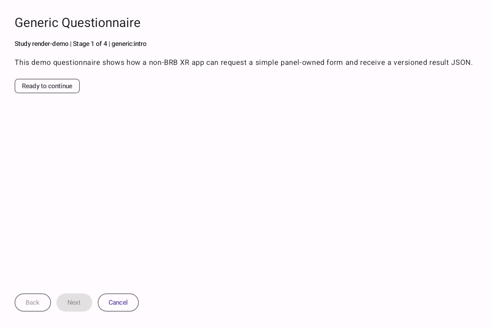
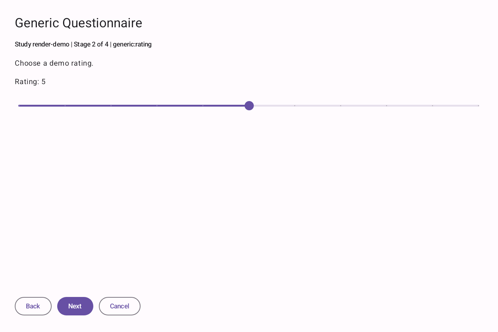
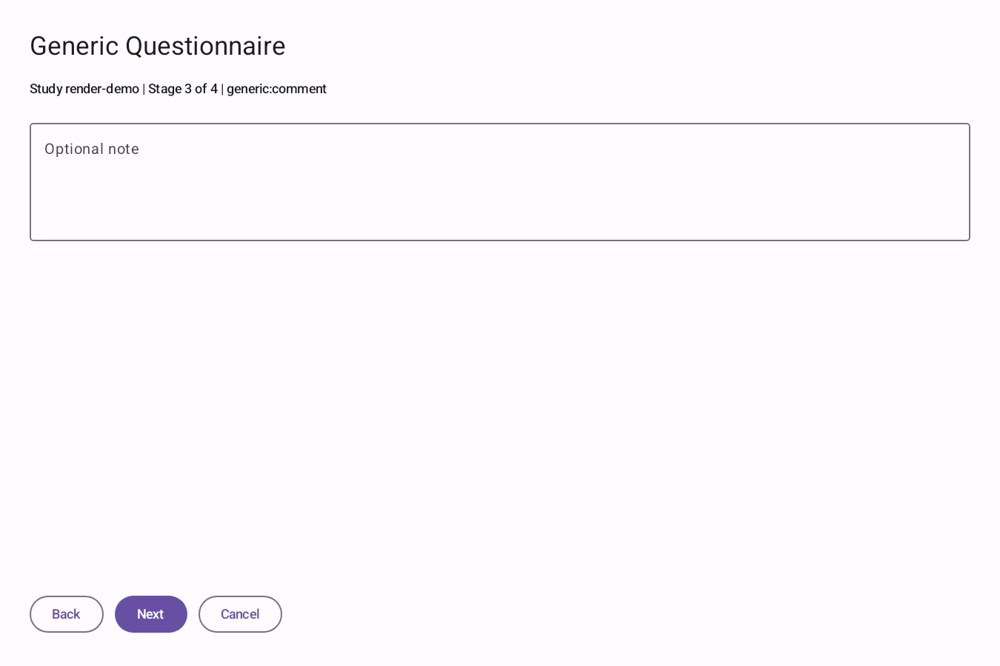
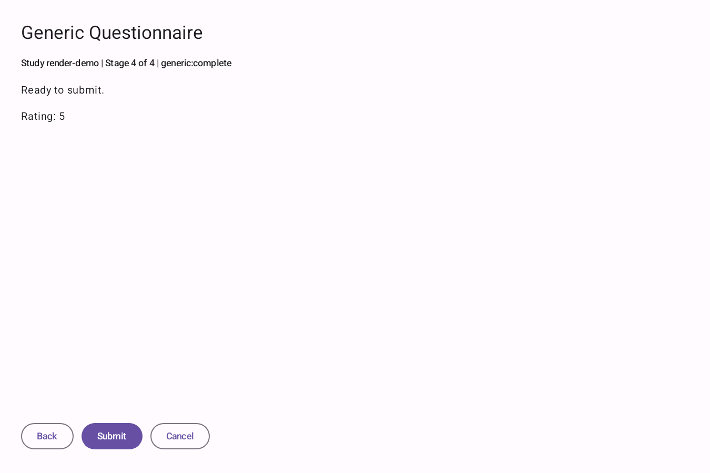
The Big Red Button Unity app is the current reference integration. It
drives the panel by choosing the questionnaire stage, creating the
request, and validating the returned JSON. The current reference is
the BRB
main.
| BRB moment | Panel sequence | Plain-language purpose |
|---|---|---|
| Before the first condition | language_select -> demographics -> prior_experience |
Set language and collect starting context before the study begins. |
| After condition 1 | post_condition:pictographic -> post_condition:presence_questionnaire -> post_condition:lost_opportunity |
Ask how the button felt and whether the participant noticed a lost opportunity. |
| After condition 2 | post_condition:pictographic -> post_condition:presence_questionnaire |
Repeat the post-condition measures without the first-condition-only prompt. |
| End of the study | final:end_confirmation -> final:extra_presses_prompt -> complete:export_summary |
Ask the 1-to-10 end confirmation, then return to Unity for any physical final presses. |
BRB is the first integration, not a special transport. Any cooperating XR app can use the same launch and result pattern. The reusable rules are documented in the handoff contract and the Intent contract.
content:// URI.protocol_version,
study_id, schema_id,
open_stage, and screen_sequence.
The product path does not need ADB, WiFi debugging, public shared storage, MediaStore answer exchange, Termux file drops, package killing, force-stop cleanup, or overlay tricks. Those can be lab tools, but they are not the app-to-app contract.
For a concrete Unity caller, read BRB's result provider, result store, and return receiver.
This is the shortest success path for proving that the panel can be launched, can collect a result, and can return that result to a caller-owned private URI.
status is completed..\gradlew.bat :app:assembleMinimalDebug
.\gradlew.bat :examples:native-caller:assembleDebugThis is the minimum caller-side shape before app-specific wrappers. Real code should use the SDK or local helper classes, but the obligations are the same.
val requestId = uuid()
val nonce = randomNonce()
val resultUri = createPrivateWritableResultUri(requestId)
val requestJson = buildQuestionnaireRequest(
protocol = "quest.questionnaire.v1",
studyId = "my-study",
schemaId = "my-questionnaire-v1",
openStage = "post_condition",
screenSequence = listOf("post_condition")
)
val callback = PendingIntent.getBroadcast(
context,
requestId.hashCode(),
resultIntent(requestId),
FLAG_ONE_SHOT or FLAG_IMMUTABLE
)
startActivity(
Intent("io.github.mesmerprism.questquestionnaire.action.START")
.setComponent(panelComponent)
.setDataAndType(resultUri, "application/vnd.quest-questionnaire.request+json")
.addFlags(Intent.FLAG_GRANT_WRITE_URI_PERMISSION)
.putExtra("session_id", sessionId)
.putExtra("request_id", requestId)
.putExtra("request_nonce", nonce)
.putExtra("request_json", requestJson)
.putExtra("result_uri", resultUri)
.putExtra("return_to_caller", callback)
)The launch Intent carries identity, request JSON, a writable result URI, and a callback. The callback is only a signal; answers stay in the result JSON. The canonical definitions live in the panel repo's Kotlin contract core, request schema, and result schema. Compatibility rules are in contract versioning.
| Required extra | Type | Why it exists |
|---|---|---|
session_id |
string | Caller session identifier. |
request_id |
string | Opaque per-request id used to match the result. |
request_nonce |
string | Random value that binds launch and result. |
request_json |
string | JSON matching quest.questionnaire.v1.request. |
result_uri |
parcelable Uri | Caller-owned writable content:// URI. |
return_to_caller |
PendingIntent | One-shot broadcast callback sent after JSON is written. |
{
"protocol_version": "quest.questionnaire.v1",
"session_id": "brb-session-042",
"request_id": "f8d62b0a-77e8-4f7d-a7da-7f95fd9a7024",
"nonce": "b96d9b51c4874db8a4e8f1b4",
"study_id": "brb",
"schema_id": "brb-questionnaire-v1",
"open_stage": "post_condition:pictographic",
"condition_number": 1,
"screen_sequence": [
"post_condition:pictographic",
"post_condition:presence_questionnaire",
"post_condition:lost_opportunity"
],
"caller": {
"package": "org.thebigredbuttoninstitute.app",
"app_version": "debug",
"engine": "unity"
}
}{
"protocol_version": "quest.questionnaire.v1",
"schema": "quest.questionnaire.v1.result",
"request_id": "f8d62b0a-77e8-4f7d-a7da-7f95fd9a7024",
"nonce": "b96d9b51c4874db8a4e8f1b4",
"status": "completed",
"questionnaire": {
"id": "brb-questionnaire-v1",
"version": 1
},
"stage": "post_condition:pictographic",
"condition_number": 1,
"screen_sequence": [
"post_condition:pictographic",
"post_condition:presence_questionnaire",
"post_condition:lost_opportunity"
],
"answers": {
"open_stage": "post_condition:pictographic",
"completed_stage": "post_condition:lost_opportunity",
"language": "en-US",
"demographics": {
"participant_ref": "P042",
"age_range": "30-39",
"language": "en-US"
},
"prior_button_experience": {
"has_used_similar_button": false,
"notes": null
},
"post_condition": {
"presence_slider": 64,
"redness_vas": 71,
"redness_likert": 5,
"lost_opportunity_acknowledged": true
},
"final": {
"end_confirmation_rating": null,
"selected_10": false,
"unity_owns_final_physical_presses": true
}
},
"started_at": "2026-06-13T21:10:00Z",
"submitted_at": "2026-06-13T21:11:14Z",
"error": null
}The handoff is designed so a study can recover from interruption without leaking answers into broad storage, callback extras, logs, or filenames.
Answers go into the caller-owned result JSON only. The callback is only a signal. Do not put answers or raw participant identifiers in logs, filenames, notifications, or callback extras.
| Status | Meaning | Caller action |
|---|---|---|
completed |
Participant submitted valid answers. | Validate the JSON and continue the study. |
cancelled |
Participant, back navigation, or system interruption stopped the panel. | Mark missing data and decide whether to retry, skip, or end the block. |
error |
The panel could not render, validate, write, or return cleanly. | Show a recovery prompt, preserve pending state, or abort the study block. |
Result v1 includes started_at and
submitted_at, plus optional screen-level timing:
entered time, first answer-changing interaction, left time,
duration, interaction count, and validation-failure count.
Start with the plain-language flow above, then use these source
links when you need the exact implementation. Panel links point to
main; BRB links point to the pushed
main branch.
Start here when you need the launch shape, schema rules, and compatibility guarantees.
Use these files to understand launch validation, rendering, and answer models inside the Android panel app.
Start here when wiring a native Android caller, Unity caller, or BRB-style reference app.
Use these when checking headset behavior, documentation hygiene, audio assets, validation coverage, or capture workflows.
These ADB commands are development and capture helpers. They are useful for repeatable headset checks, but the product integration is still the explicit Intent, result URI, and callback contract above.
The minimal flavor is the default recommendation for study deployments.
.\gradlew.bat :app:assembleMinimalDebugThe lab updater flavor keeps the internal update UI and install permissions.
.\gradlew.bat :app:assembleLabUpdaterDebugUse this to prove the BRB Unity runtime is receiving command extras.
adb shell am start -W \
-n org.thebigredbuttoninstitute.app/com.unity3d.player.UnityPlayerGameActivity \
--es brb.runtimeCommand press_buttonUse this to capture the timed 3D button blink from the BRB runtime.
adb shell am start -W \
-n org.thebigredbuttoninstitute.app/com.unity3d.player.UnityPlayerGameActivity \
--es brb.runtimeCommand "blink_button:6"Unity prepares the request and launches the panel route.
adb shell am start -W \
-n org.thebigredbuttoninstitute.app/com.unity3d.player.UnityPlayerGameActivity \
--ez brb.questionnaireOpen true \
--es brb.questionnaireTrigger initialUse the numbered trigger after condition 1 or condition 2.
adb shell am start -W \
-n org.thebigredbuttoninstitute.app/com.unity3d.player.UnityPlayerGameActivity \
--ez brb.questionnaireOpen true \
--es brb.questionnaireTrigger post_condition_1Debug scripts are for validation clips and regression checks.
adb shell am start -W \
-n org.thebigredbuttoninstitute.app/com.unity3d.player.UnityPlayerGameActivity \
--ez brb.questionnaireOpen true \
--es brb.questionnaireTrigger final \
--es brb.questionnaireCommandScript "final:1,next,submit" \
--ei brb.questionnaireCommandIntervalMs 1400The preferred public capture path is now one continuous Quest built-in headset recording started and stopped through UIAutomator, with the final public clips cut from that single source take. Landscape and portrait Metacam modes are both verified; portrait produces a true vertical source, but the current BRB plus panel composition still needs separate framing work before final clips are refreshed.
Run this in one shell, then trigger the BRB Unity and panel commands from another shell while the recorder probe is waiting.
adb shell am instrument -w \
-e scenario metacamRecordProbe \
-e recordMs 180000 \
io.github.mesmerprism.questquestionnaire.questuiautomation.test/androidx.test.runner.AndroidJUnitRunner
Trim the reviewed source into the onboarding loop names:
brb-blink, brb-press, and
panel-menu. Keep the raw source MP4 outside this
repository.
The detailed capture checklist is in the BRB demo capture workflow.
The project is public so XR teams can reuse the contract, study the BRB integration, and contribute focused improvements without committing private lab artifacts.
Keep raw participant data, device serials, APKs, screenshots, logcat bundles, signing keys, local machine paths, and private evidence artifacts out of committed files.
{kind=link}
{kind=link}
{kind=link}
{kind=link}
{kind=link}
{kind=link}
{kind=link}
{kind=link}
{kind=link}
{kind=link}
{kind=link}
{kind=link}
{kind=link}